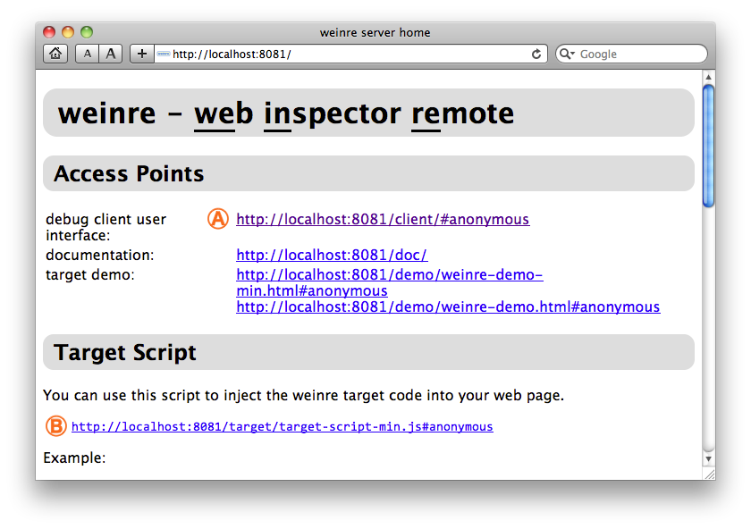
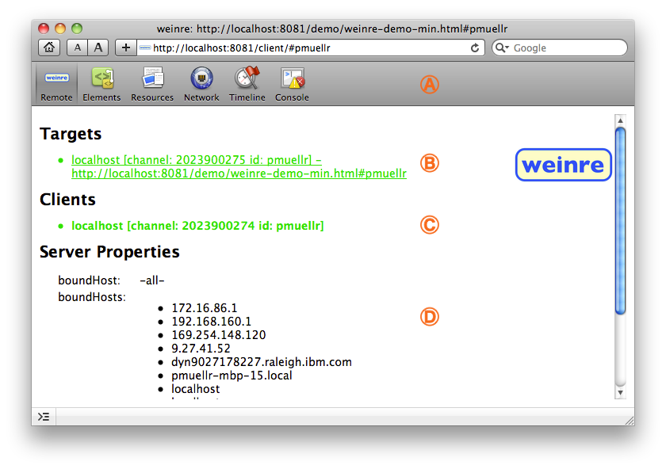
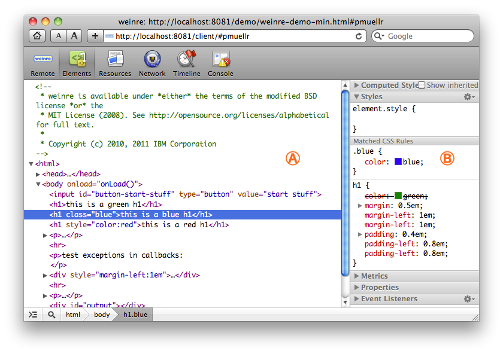
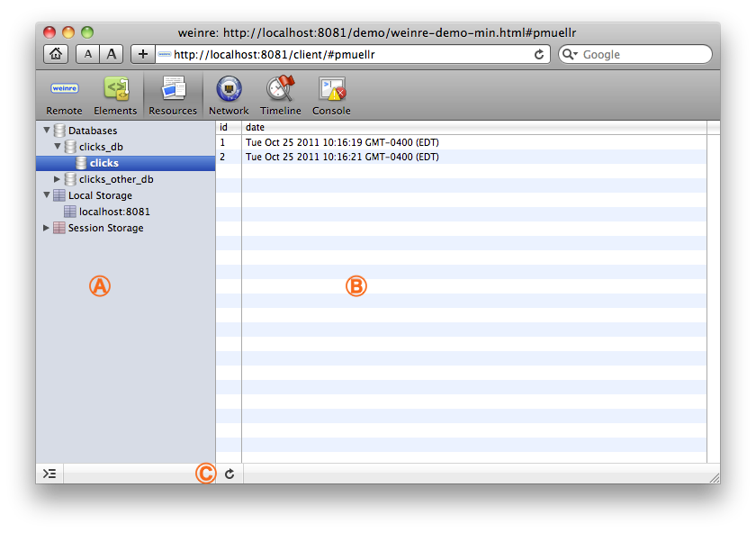
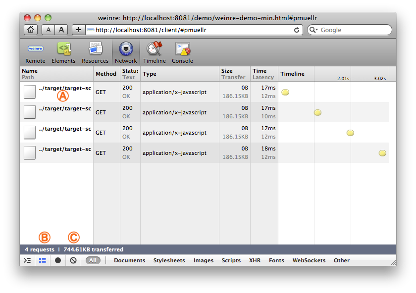
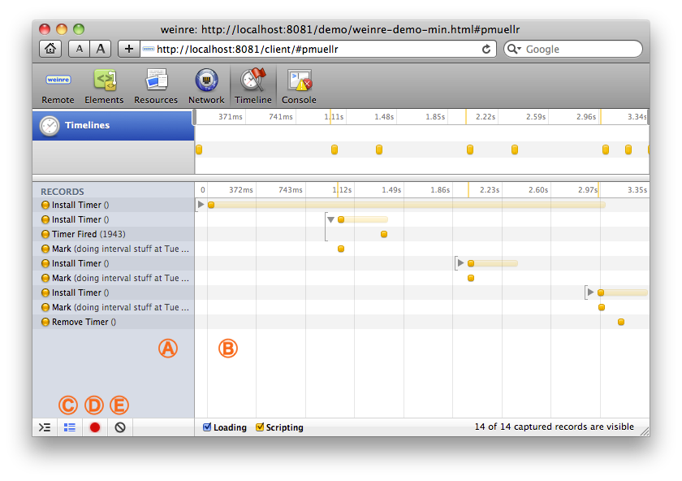
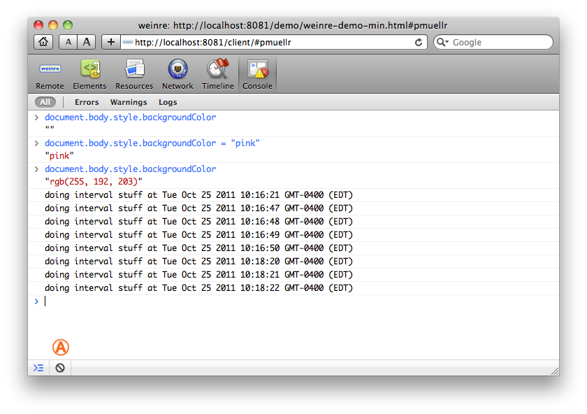

~~~~~~~~~~~~~~~~~~~~~~~~~~~~~~~~~~~~~
This page describes the user interface provided by weinre.

The server home page is accessed at the root URL of the server, in this case http://localhost:8081/.
| This link will launch the weinre client page, which is the debugger itself. Clicking this link will take you to the Remote panel, described below. |
| This is the URL of the script that you add to your web page to allow it to be debugged by the client. |
Additional links shown in this image are for this documentation, and some demo pages.
Further down on the page, not shown in the image, are:

The Remote panel is the initial panel of weinre, and displays some status regarding the server.
| The top portion of all of the weinre panels shows the panel switcher. To switch to a different panel, click on the panel's button. The current panel is displayed with a highlight, as shown above for the Remote panel. |
| The Targets section of this page lists targets that are currently connected to the server. A target is a web page that you are debugging. In this case, there is one target connected the server. Information about each target is displayed in the list, including host name / ip address, and the URL the target is displaying. |
| The Clients section of this page lists the clients that are currently connected to the server. A client is this user interface. Typically, there is just one - the client you are displaying at the time. |
|
| The Server Properties section of this page displays the values of various server properties currently in effect. Shown here are the hosts that are bound to the server - which host names / ip addresses that the server will respond to. |
The colors of the entries in the Targets and Clients list indicates their status. Blue means the Target or Client is connected to the server, but not yet connected to a peer. Green means the Target or Client is connected to a peer, and you can start debugging. Red means the Target or Client has disconnected from the server, and will eventually fade away and be removed from the list.
In case there are multiple targets connected, you can switch which one you are debugging by clicking on the item.

The Elements panel displays your HTML DOM in a tree fashion, and properties associated with selected elements.
| The elements themselves may be expanded/collapsed via the disclosure buttons. Elements and text can be edited by double-clicking the item to be edited. Elements can also be deleted by selecting the element and then pressing the delete button. |
| The sidebar area displays information about the selected element. In this case, the Styles sidebar is expanded, showing relevant CSS rules. Some sidebars allow editing of the contents. The Styles sidebar in particular allows you to add, edit and remove properties and values by double clicking on them. |

The Resources panel shows WebSQL databases, and data stored in Local Storage and Session Storage.
| The left hand side of the Resources panel is the navigator. Expanding the Databases entry will show all the Web SQL databases currently in use. Expanding a particular database will show all the tables in that database. |
| The right hand side is the editor/viewer for whatever is selected in the navigator pane. When a database is selected, a prompt will appear in the editor/viewer area where you can enter SQL statements to be executed. The results are displayed inline. When a table is selected, all the rows from the table will be displayed. When a Local Storage or Session Storage entry is selected, all the relevant keys and values will be displayed. The keys and values in the Local Storage and Session Storage tables can be edited by double-clicking. |
| The reload button will refresh the data from the target. |

The Network panel shows you information regarding XHR requests that you've made.
| Each XHR will be shown in a separate row in the table. Clicking the path name of the XHR request will show additional information for that request in the right side of the panel. To display the table again, click the (x) button in the left top corner of the information pane (not shown in the image above). |
| The "dots and lines" button can be used to change the table layout to show less information in a more compact format. |
| The "not" button will clear the entries from the table. |

The Timeline panel is used to show events that are occurring in the target. Currently only two types of events are shown: timers/intervals, and user-specified events. Use console.markTimeline("A Label") to add a user-specified event to the timeline with the specified label.
Note that timing events are not collected unless you enable the "record" button (see below).
| The left hand pane of the Timeline panel shows the events that have occurred. Hovering over an entry will show additional detail about the event. |
| The right hand pane of the Timeline panel shows the events as they occurred in time. Some events have other events associated with them, which will be shown when the disclosure triangle is expanded. The top-most time line of the right panel can have it's right and left hand edges moved to show a particular time range in more detail. |
| The "dots and lines" button can be used to show and hide events that last less than a fixed time (currently 15ms). |
|
| The "record" button is used to start or stop event collection. When weinre starts, the record button is off (black). When you click the record button to start collecting events, it will turn red. |
| The "not" button will clear the current timing entries. |

The Console panel is used to execute arbitrary JavaScript expressions/statements. It also shows the output from various console methods, like console.log().
In the example above, the JavaScript statements entered by the user are in blue, the output of the statements is just below it, and messages generated by console.log() are in black.
| The "not" button will clear the console. |

The Console can also be embedded in every panel, by clicking the "console" button.
| The "console" button will embed the console in the bottom half of the other panels, or hide it if it's currently embedded in the other panels. |
Home
- User Interface
- Installing
- Running
- Multi-User
- Security
- Building
- ChangeLog
- License